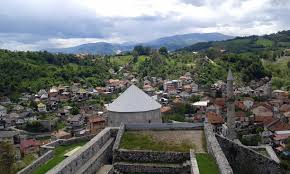

ترافنيك

أماكن سياحيه
قلعة ترافنيك ( ستاري غراد )
.png)
يعود تاريخ قلعة ترافنيك أو قلعة ستاري غراد إلى ما قبل البوسنة, عندما حكمت المملكة المسيحية السابقة المنطقة. اليوم, القلعة هي أفضل ما تبقى من آثار البوسنة, و تعد نصب تذكاري وطني له أهميته التاريخية, مما يجعلها منطقة جذب لا غنى عنها في ترافنيك لجميع السياح. ستجد متحفاً صغيراً مخصصاً لتاريخ القلعة و قسم إثنوغرافي ( علم الأعراق البشرية ) بداخله. يمكن للزوار المشي أيضاً حول جميع جوانب الأسوار المحيطة بالقلعة للحصول على إطلالات بانورامية 360 درجه للمناظر الطبيعية المحيطة.
مسجد جيني ( حسن آغا )
.png)
يقع مسجد جيني أقدم مسجد في مدينة ترافنيك على بعد حوالي كيلومتر واحد من غرب قلعة ترافنيك. مسجد جيني, تم الانتهاء من بناءه في عام 1549 كان لكل مستوطنة في فترة الحكم العثماني, مسجد مركزي واحد على الأقل, و ظل مسجد جيني هو الوحيد في مدينة ترافنيك لمدة 500 عام تقريباً, ثم تم تدميره و إعادة بنائه عدة مرات.
مسجد السليمانية

على الرغم من أن هذا المسجد يسمى رسمياً ” مسجد السليمانية “, إلا أن سكان ترافنيك يستخدمون اسمه القديم ” المسجد المزخرف “, الذي يشير إلى الواجهة الجدارية الشهيرة المزخرفة الملونة و التي تلاشت نوعاً ما بمرور السنين, إلا أنه لا يزال أحد معالم الجذب الأكثر إثارة للاهتمام في ترافنيك. بني مسجد السليمانية في القرن السادس عشر, يتميز المسجد بقبة مثيرة للإعجاب يبلغ ارتفاعها 47 متراً, و ديكور داخلي أنيق.
بلافا فودا ( النبع الأزرق )

تتدفق المياه الزرقاء النقية لمنطقة بلافا فودا أو النبع الأزرق على طول مجرى النهر إلى الجزء الشرقي من قلعة ترافنيك. في منطقة بلافا فودا توجد سلسلة من الجسور الخشبية تتقاطع فوق الماء لتشكل منظراً شديد الجمال. تصطف المطاعم و المقاهي على حافة النبع, حيث تعد مكاناً هادئاً لالتقاط الصور و التمتع بتناول وجبة مع الاستمتاع بالمناظر الخلابة.
جبال فلاشيتش

جبال فلاشيتش هي جبال في وسط البوسنة بالقرب من بلدة ترافنيك ( تبعد عنه 22 كم, حوالي 40 دقيقة ), تبرز في البوسنة لكونها مكان مناسب لعشاق رياضة التزلج في فصل الشتاء بسبب وجود منتجع خاص بالتزلج يسمى ” بابانوفاتس ” و مكان طبيعي للاسترخاء و الاستمتاع بمناظر رائعة خضراء في فصل الصيف و مركزاً لإنتاج الجبن في البوسنة.
افضل فنادق ترافنيك
فندق سنترال

فندق سنترال ذو الـ 4 نجوم يبعد حوالي 3 كم عن وسط فيتيس, و 80 كم عن مطار سراييفو.
فندق كارب ديم البوتيكي

يقع فندق كاربي ديام بوتيك في وسط زينيكا على بعد مسافة قصيرة سيراً على الأقدام من وسط المدينة القديمة.
فندق فيزير بالاس

عد فندق فندق فيزير بالاس ذو الـ 4 نجوم من أفضل خيارات الإقامة بالقرب من القلعة.
فندق بانوراما ترافنيك

يتميز فندق بانوراما ترافنيك بشرفاته التي لها إطلالات خلابة على الجبل.
.webp)